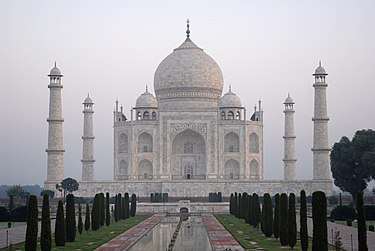

Qutab Minar
Delhi’s Qutub Minar ranks amongst the top 10 historical places in India. A UNESCO World Heritage Site, the Qutub Minar, also known as the Victory Tower, is the tallest brick minaret in the whole world, standing tall at a height of 72.5 metres. Built of marble and red sandstone, you can also see many beautiful carvings and designs of the Qutub Minar.
Know More

Taj Mahal
One of the most famous historical sites in India, the Taj Mahal of Agra dates back to the 17th century. It was built by Shah Jahan, the Mughal emperor, in the memory of Mumtaz Mahal, his third wife. It is also the abode of the tomb of Shah Jahan himself.The Taj Mahal has intricate carvings.
It is also one of the Seven Wonders of the World.
Know More

Red Fort
When it comes to the famous historical places in India, one cannot miss the Red Fort in Delhi. Also popularly known as the Lal Qila, the Red Fort was constructed during Shah Jahan’s reign in the 17th century.
Constructed using red sandstone walls in the Mughal style of architecture, the highlights of the Red Fort include its beautiful gardens.
Know More

Fatehpur Sikri
An architectural gem and one of the most exquisite historical places in India is Fatehpur Sikri, a town in the Agra district of Uttar Pradesh. A recognized UNESCO World Heritage Site, Fatehpur Sikri is made predominantly out of red sandstone, and dates back to the late 16th century, when it was founded by Mughal Emperor Akbar.Fatehpur Sikri is completely fortified.
Know More

Victoria Memorial
Ranking amongst the top 10 historical places in India, Kolkata’s Victoria Memorial was constructed in honour of Queen Victoria, making it one of the relics of the British Raj. Built entirely out of white marble, the Victoria Memorial is almost a replica of its namesake in London.
Surrounded by a well-manicured garden on all sides, it is home to a wide number of sculptures.
Know More

Hawa Mahal
Hawa Mahal in Jaipur is one of the best historical places in India, in addition to being a prominent landmark of Rajasthan. Dating back to the 18th century, Hawa Mahal is a 5-storey structure that overlooks the bustling streets of Jaipur. It has also been made in a blend of the Rajput, Mughal and Islamic styles of architecture.Built by Maharaja Sawai Pratap Singh.
Know More